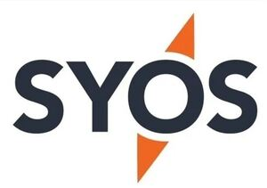

Trade Mark Journal No.2025/050 12 December 2025
WO0000001888232 (9,12,40,42)
Office of origin: New Zealand
Date of International Registration:25 August 2025
Date of designation in the UK:
25 August 2025

International priority date claimed: 12 June 2025
(New Zealand)
(1295049)
- Class 9
- Controllers and control systems to operate, track and monitor vehicles for locomotion by land, air, water or rail, unmanned aerial vehicles (UAVs), unmanned surface vehicles (USVs), unmanned ground vehicles (UGVs), drones, civilian drones, military drones, delivery drones, camera drones, autonomous vehicles and remote control vehicles; navigational apparatus, instruments, systems, hardware and software for vehicles for locomotion by land, air, water or rail, unmanned aerial vehicles (UAVs), unmanned surface vehicles (USVs), unmanned ground vehicles (UGVs), drones, civilian drones, military drones, delivery drones, camera drones, autonomous vehicles and remote control vehicles; avionic instruments, equipment, systems, hardware and software for vehicles for locomotion by air, unmanned aerial vehicles (UAVs), drones, civilian drones, military drones, delivery drones and camera drones; software and hardware to operate, control, track and monitor vehicles for locomotion by land, air, water or rail, unmanned aerial vehicles (UAVs), unmanned surface vehicles (USVs), unmanned ground vehicles (UGVs), drones, civilian drones, military drones, delivery drones, camera drones, autonomous vehicles and remote control vehicles; software and hardware to operate and control cameras including video cameras; telecommunications apparatus; electric and electronic sensors; cameras; mounting devices for cameras; electronic publications and databases.
- Class 12
- Vehicles for locomotion by land, air, water or rail; unmanned aerial vehicles (UAVs); unmanned surface vehicles (USVs); unmanned ground vehicles (UGVs); drones; civilian drones; military drones; delivery drones; camera drones; autonomous vehicles; remote control vehicles, other than toys; structural parts and fittings in this class for all of the foregoing goods.
- Class 40
- Custom manufacturing of vehicles for locomotion by land, air, water or rail, unmanned aerial vehicles (UAVs), unmanned surface vehicles (USVs), unmanned ground vehicles (UGVs), drones, civilian drones, military drones, delivery drones, camera drones, autonomous vehicles and remote control vehicles; custom manufacturing of parts and fittings for vehicles for locomotion by land, air, water or rail, unmanned aerial vehicles (UAVs), unmanned surface vehicles (USVs), unmanned ground vehicles (UGVs), drones, civilian drones, military drones, delivery drones, camera drones, autonomous vehicles and remote control vehicles; information, advisory and consultancy services relating to all of the foregoing services.
- Class 42
- Software as a service (SaaS) services namely software for use in operating, controlling, tracking and monitoring vehicles for locomotion by land, air, water or rail, unmanned aerial vehicles (UAVs), unmanned surface vehicles (USVs), unmanned ground vehicles (UGVs), drones, civilian drones, military drones, delivery drones, camera drones, autonomous vehicles and remote control vehicles; software as a service (SaaS) services namely software for use in navigation; software as a service (SaaS) services namely software for use in avionics; software as a service (SaaS) services namely software for use in operating and controlling cameras including video cameras; providing temporary use of on-line non-downloadable software for use in operating, controlling, tracking and monitoring vehicles for locomotion by land, air, water or rail, unmanned aerial vehicles (UAVs), unmanned surface vehicles (USVs), unmanned ground vehicles (UGVs), drones, civilian drones, military drones, delivery drones, camera drones, autonomous vehicles and remote control vehicles; providing temporary use of on-line non-downloadable software for use in navigation; providing temporary use of on-line non-downloadable software for use in avionics; providing temporary use of on-line non-downloadable software for use in operating and controlling cameras including video cameras; custom design of software for operating, controlling, tracking and monitoring vehicles for locomotion by land, air, water or rail, unmanned aerial vehicles (UAVs), unmanned surface vehicles (USVs), unmanned ground vehicles (UGVs), drones, civilian drones, military drones, delivery drones, camera drones, autonomous vehicles and remote control vehicles; information, advisory and consultancy services relating to all of the foregoing services.
SYOS AEROSPACE LIMITED
Representative: AJ PARK, Aon Centre,, Level 22,, 1 Willis Street, Wellington 6011, NEW ZEALAND